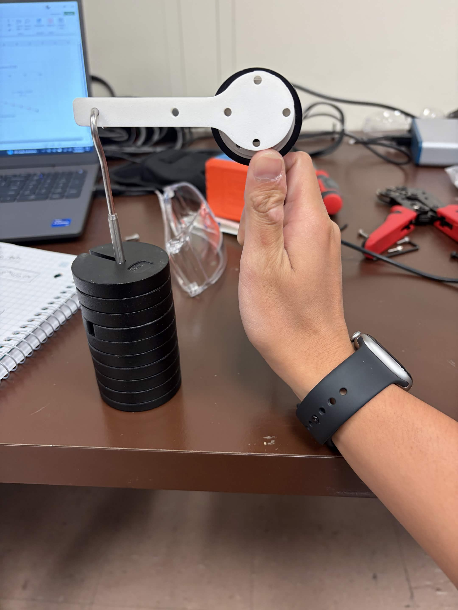
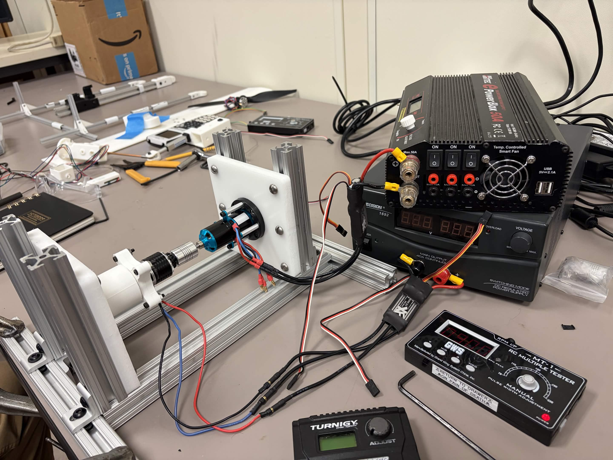

Roughly 5 hours per week, I assist in conducting experiments and analyzing data related to vertical flight dynamics. I have learned how to conduct precise data collection and analysis techniques using LabVIEW. Experiments include a torque cell calibration, dynamometer testing, and a dynamometer experiment.
For the torque cell calibration, I learned how to properly calibrate and use the torque cell for accurate measurements. The torque cell was mounted on a precision stand with a rod screwed into it. The rod has a known weight and the amount of weight being added to the end of the rod was known. To calibrate the torque cell, measurements were taken at various load conditions to establish a relationship between the applied torque and the output signal. Once a linear relationship was established, the slope of the line was used as the calibration factor, allowing the torque cell to be used for accurate measurements.

For the dynamometer testing, I learned how to set up and operate a dynamometer to measure the performance of a motor. A primary motor was mounted on one end and a secondary load motor was mounted on the other end. The load moor is implemented to simulate the drag force caused by the propellers that will eventually be mounted on the primary motor. The main goal of the experiment is to determine the torque produced by the primary motor when the secondary load motor was turned on. In the testing phase, the load motor ended up getting hot when the primary and load motors were ran , even though power was not being supplied to it. This was due to the fact that the primary motor was feeding power to the load motor. Since both motors need a power supply to run the full testing, the power supply to the load motor was also generating and feeding power to the load motor. This became a problem because the load motor had extra power coming from the primary motor, which caused it to overheat. The extra power coming from the primary motor had no where to go, so it was being converted to heat in the load motor. To fix this problem, a different ESC was required, one that was more capable of handling the power being fed to it and back-driving a motor.
